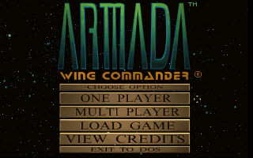
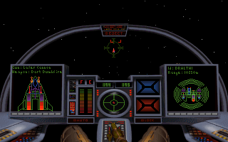

名稱：銀河飛將無敵艦隊／銀河艦隊／銀河飛將阿曼達／銀河飛將艾曼達 (Wing Commander Academy，英文版) 簡介：Origin 1994年出品的太空飛行戰鬥模擬遊戲，為銀河飛將系列的衍生作品，台灣由智 冠代理發行 [待補]。   保護：無 備註：光碟版請在DOS執行INSTALA.EXE安裝。執行INSTALL.EXE會安裝使用手冊，且只能在 Windows上安裝，XP以上系統需設定Win9x相容。

